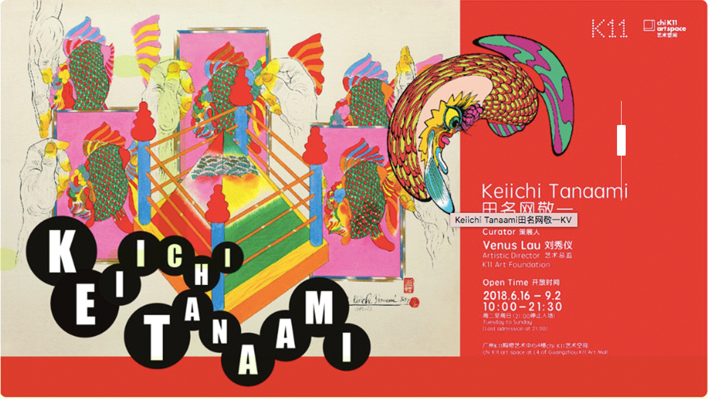
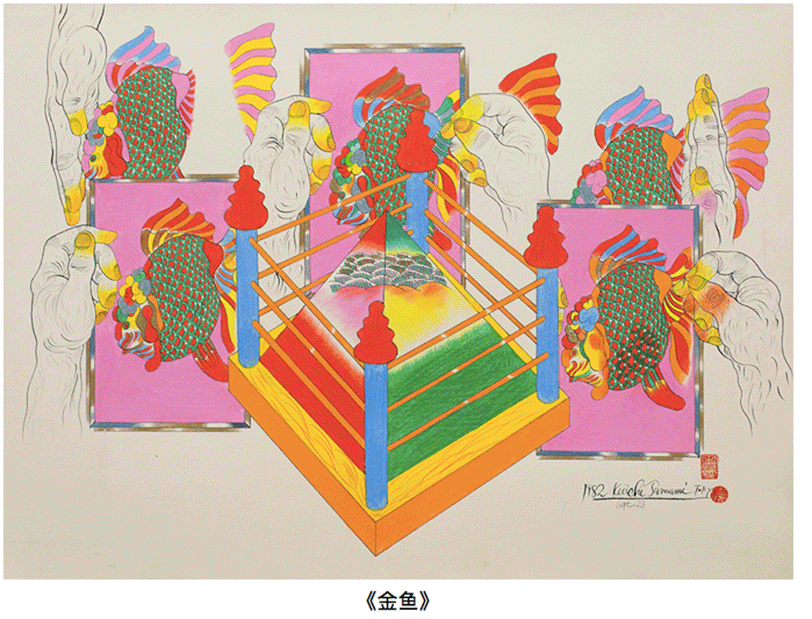
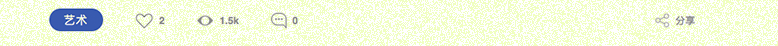

Keiichi Tanaami田名网敬一
广州K11购物艺术中心chi K11 艺术空间将于2018年6月15日带来由刘秀仪策划的'田名网敬一'当代艺术展,呈现日本艺术家田名网敬一1960年代至今40 多件深具代表性的艺术作品...


展览名称Keiichi Tannami田名敬一
票价80元
公众展期2018年6月16日至2018九月2日
开放时间周二至周日（周一闭馆）10:00-21:30（21:00）停止入场
展览地点广州k11购物艺术中心4楼 k11艺术空间